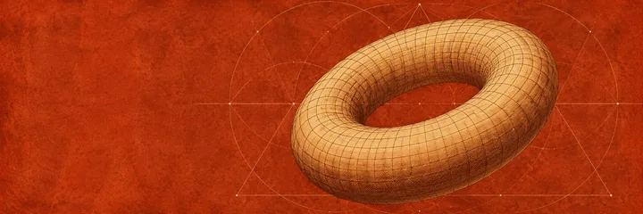

Laboratorio interactivo
Sin preguntas, no hay respuestas, sin problemas, no hay soluciones.
Simulaciones para observar fenómenos y experimentar con ellos.

Gráficas y actividades para visualizar ideas y ponerlas a prueba.